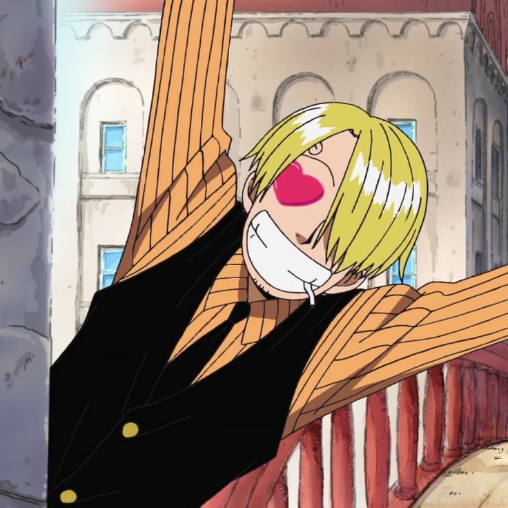

Curriculum Vitae
Salsabil Aberkan 😍

Information Personnelles
- Nom : Aberkan
- Prénom : Salsabil
- Date de Naissance : 27 juin 2002 (21 ans)
- Adresse : 45, Rue saint martin , 1080 Molenbeek saint jean, Belgique
- Téléphone : +32 486 79 39 12
- Email :Aberkan.s@hotmail.com
formations
- 2020-2021: Arts Martiaux et Techniques de Combat de Jambe
- 2022-2023: Certificat en Marketing en Ligne
Expériences Professionnelles
- 2012-2013: Assistante Marketing Digital
- 2015-2019: Chef Cuisinier de Baratie
- 2020-2022: Conseillère en Gestion de Projet
Compétences
Langues
- Français (courant),
- Anglais (avancé),
- Néerlandais (courant)
Centres d'Intérêt
- La lecture
- Montage vidéo
- Voyager